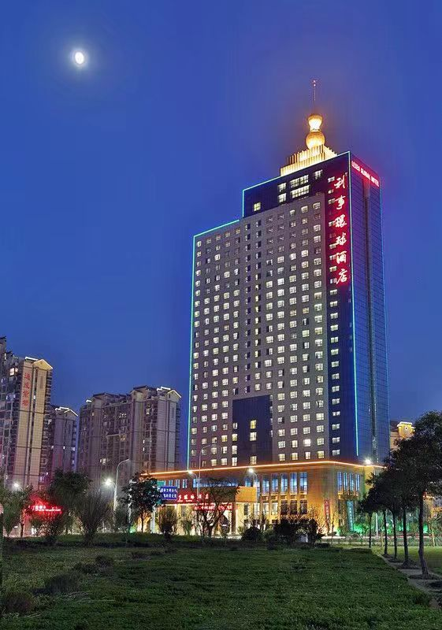
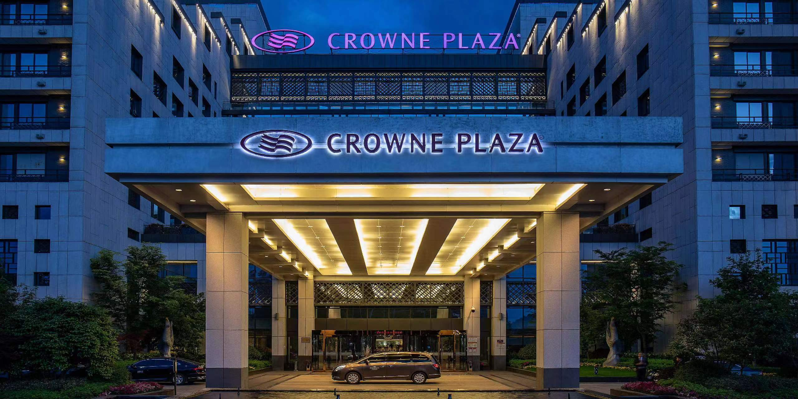

酒店简介:
蚌埠利事环球酒店地处蚌埠风光宜人的淮河河畔。交通便利，距蚌埠高铁南站20分钟车程、距繁华市中心10分钟车程。 蚌埠利事环球酒店共有370间客房，包括26间商务套房、13间行政套房和一间总统套房。370间客房中特有的123间景观房，淮河景观尽收眼底，远处的城市风光一览无余，让人恍如置身世外桃源，尘世纷扰一扫而空...... 利事俱乐部是位于酒店内26层至33层的贵宾专属会所，宾客一经入住即可享受高级别的贴身服务。

酒店简介:
黄山昱城皇冠假日酒店是由洲际集团管理的一家国际高星级酒店，是黄山市区最高档次的酒店。 酒店地处黄山市中心地带，毗邻新安江，俯瞰迷人风光，地理位置十分优越。 距离老街只需5分钟车程，离机场也只有15分钟的车程。酒店有穿梭巴士和出租车来往于市区和黄山风景区、 西递等景点。酒店内配有国际标准的健身中心和室内游泳池，专业的水疗中心，特色的云海中餐厅和全日制江畔咖啡厅。 酒店开业时间2012年04月01日，主楼高12层，客房总数485间（套）。